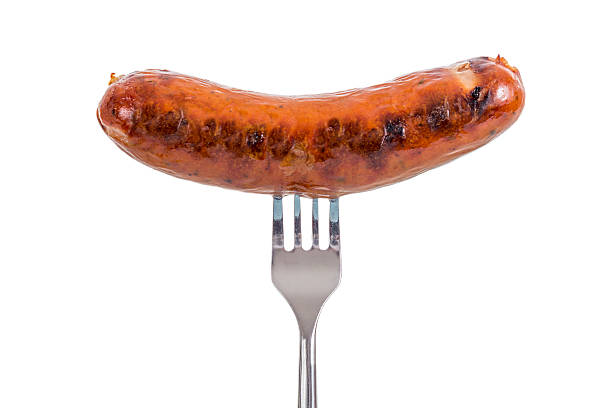

Sausages with beans and cheese

Description
This meal contains the best ingredients present in this galaxy:
If done properly, it will burn a hole into your intestines. If you want to suffer with me, here is how to do it!
Ingredients:
- Sausages
- Red Beans from a can
- Cheese (sliced)
- Chilli Peppers
Preparation:
- Put canned beans into medium-sized pot and heat up.
- Put water into medium-sized bowl and submerge sausages. Cook them properly.
- Transfer beans into glass plate and put sausages on top. And chilli.
- Cover sausages with slices of cheese and put into microwave for 8-10 minutes.